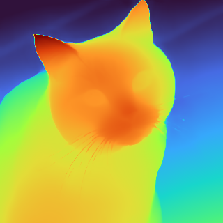

Depth Estimation¶
Predict how far every pixel is from the camera using a single ordinary photograph — no stereo pair, no depth sensor. Useful for background blur, occlusion-aware compositing, 3D effects, and scene understanding.
Quick example¶
try (var estimator = DepthAnythingEstimator.builder().build()) {
DepthMap depth = estimator.estimate(Path.of("room.jpg"));
}
Full example¶
import io.github.inference4j.vision.Colormap;
import io.github.inference4j.vision.DepthAnythingEstimator;
import io.github.inference4j.vision.DepthMap;
import io.github.inference4j.vision.ImageAnnotator;
import java.nio.file.Path;
public class DepthEstimation {
public static void main(String[] args) throws Exception {
try (var estimator = DepthAnythingEstimator.builder().build()) {
DepthMap depth = estimator.estimate(Path.of("cat.jpg"));
System.out.printf("Size: %d x %d%n", depth.width(), depth.height());
System.out.printf("Range: %.3f to %.3f%n", depth.min(), depth.max());
// Larger values are closer to the camera
System.out.printf("Centre depth: %.3f%n",
depth.at(depth.width() / 2, depth.height() / 2));
ImageAnnotator.save(depth.toImage(Colormap.TURBO), Path.of("depth.png"));
}
}
}

Colormap.TURBO — warm is near, blue is farReading the values¶
Depth is relative inverse depth, not metres:
- Larger values are closer to the camera
- The scale is model-dependent and differs between images, so compare values within one map, never across two
- There is no absolute unit — this is ordering, not measurement
If you need metric depth in real-world units, this is not the right model.
Rendering¶
A depth map is hard to read as raw numbers. DepthMap renders directly to an image, rescaled to its own range:
BufferedImage gray = depth.toImage(); // grayscale
BufferedImage turbo = depth.toImage(Colormap.TURBO); // high-contrast
BufferedImage vir = depth.toImage(Colormap.VIRIDIS); // colour-blind friendly
| Colormap | When to use |
|---|---|
GRAYSCALE |
The image is data rather than a picture — feeding another process, thresholding |
TURBO |
Maximum contrast between near and far. Best default for looking at depth |
VIRIDIS |
Perceptually uniform and colour-blind friendly. Best for anything published |
Builder options¶
| Method | Type | Default | Description |
|---|---|---|---|
.modelId(String) |
String |
inference4j/depth-anything-v2-small |
HuggingFace model ID |
.modelSource(ModelSource) |
ModelSource |
HuggingFaceModelSource |
Model resolution strategy |
.sessionOptions(SessionConfigurer) |
SessionConfigurer |
default | ONNX Runtime session config |
.inputName(String) |
String |
auto-detected | Input tensor name |
.targetSize(int) |
int |
518 |
Long-side resize target, rounded up to a multiple of 14 |
Result type¶
DepthMap is a record with:
| Field | Type | Description |
|---|---|---|
values() |
float[][] |
Per-pixel depth as [height][width] |
width() |
int |
Map width, always matching the input image |
height() |
int |
Map height, always matching the input image |
Plus at(x, y), min(), max(), toImage() and toImage(Colormap).
How Depth Anything V2 works¶
A ViT backbone with a DPT decoder head, trained on a large mix of labelled and pseudo-labelled images. It predicts a dense depth value per patch, which the decoder upsamples to a full-resolution map.
The image is resized so its longer edge reaches targetSize with aspect ratio preserved, then both dimensions are rounded up to a multiple of 14 — the ViT patch size. Depth is predicted at that working resolution and bilinearly resampled back, so DepthMap coordinates always match the image you passed in.
Available models¶
| Model | Parameters | Notes |
|---|---|---|
inference4j/depth-anything-v2-small |
~25M | Default, and the only variant currently hosted |
Depth Anything V2 also ships Base (~98M) and Large (~335M) variants. They share the same
graph and the same input and output contract, so they work through this wrapper without
code changes — but they are not hosted under the inference4j org yet. To use one, point
.modelId(...) at another source and supply a model.onnx at the repository root:
try (var estimator = DepthAnythingEstimator.builder()
.modelSource(new LocalModelSource(Path.of("/models")))
.modelId("depth-anything-v2-base")
.build()) {
DepthMap depth = estimator.estimate(image);
}
Hardware acceleration¶
try (var estimator = DepthAnythingEstimator.builder()
.sessionOptions(opts -> opts.addCoreML())
.build()) {
estimator.estimate(Path.of("room.jpg"));
}
Tips¶
- Both
PathandBufferedImageinputs are supported. - Raising
targetSizerecovers finer detail at roughly quadratic cost. Lower it for faster throughput on large batches. - The output always matches your input dimensions, so a
DepthMapcan be indexed with the same coordinates as the source image. - To composite by depth, threshold on a value read from the map itself — a fixed constant will not transfer between images, because the scale is per-image.